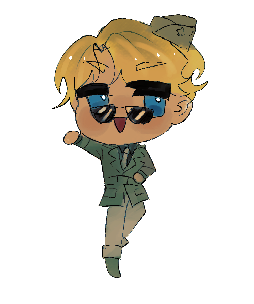

"Beneath the clouds they fought, beyond the stars they inspire."
Welcome to a digital archive dedicated to preserving the words, memories, and encouragement left behind by pilots and personnel of the United States Army Air Forces (USAAF) during World War II.

This project aims to carry on the “spirit of courage” passed down by the previous generation — from legendary fighter aces to unnamed servicemen who lost their lives in the line of duty — in order to inspire and encourage people today to overcome the hardships of life.
Click below to explore stories, memories, and messages of encouragement from different categories:
If you have records, letters, or messages from former USAAF personnel that you would like to share, please see CONTRIBUTING for information on how to contribute to the project.